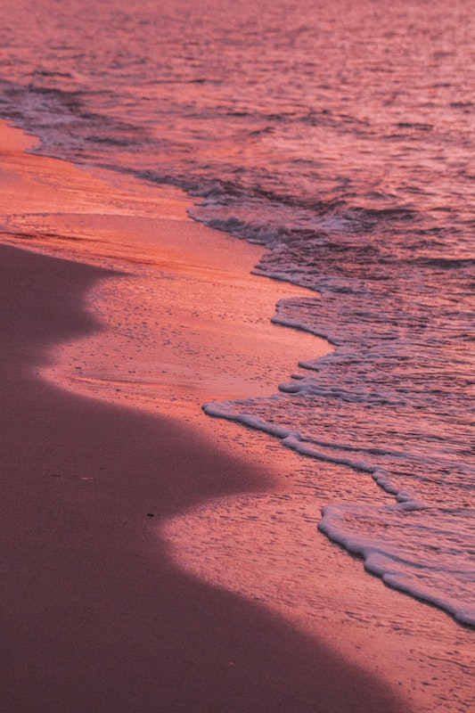
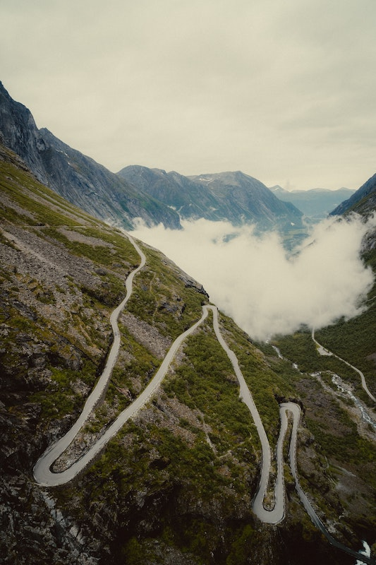

Wes Hicks
Alta, WY, USA

Dave Hoefler
Madison, WI, USA

Lina Silivanova
Chania, Greece

Mike Palmowski
Location: Unknown

Brad Fickeisen
Dixie National Forest, Cedar City, United States

Olivier Guillard
Am Tierpark, Berlin, Germany

Brad Fickeisen
Vermont, United States

Zach Plank
Virginia, USA

Kolya Korzh
Location: Unknown
laura Adai
Frost

Jordan Whitfield
Providence Canyon, Lumpkin, USA

Tengyart
Russia